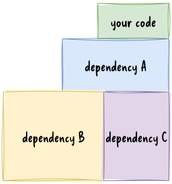

goal of this course
- provide a common foundation in software engineering for students from various backgrounds
- provide a shared terminology to be able to work seamlessly with software developers
- introduce the fundamentals of modern software development
methodologies and life cycle models
- with a focusing in detail on Scrum and Kanban
- introduce requirements analysis and software modelling
- both in theory and in practice
- provide an insight to code quality, code review, testing and automation
practise
- during the practical classes, the students explore and document the
requirements of a software system
- using user story mapping in accordance with the agile principles
- then, during the second half of the semester, they design its
architecture
- using the C4 model, which is a set of hierarchical diagrams describing the architecture of a software system
- the practical classes are workshops in which the students work
in teams
- under an instructor’s guidance
schedule
| week | date | lecture | practical class |
|---|---|---|---|
| 1 | 2025-09-17 | intro, software architecture | project assignment |
| 2 | 2025-09-24 | SDLC, scrum, kanban | colloquial R.A. |
| 3 | 2025-10-01 | requirements analysis, user story mapping | formal R.A., workshop |
| 4 | 2025-10-08 | UML, C4 | project workshop |
| 5 | 2025-10-15 | design patterns | project workshop |
| 6 | 2025-10-22 | interfaces, implementation planning | req. analysis demo |
| 7 | 2025-10-29 | school holiday | |
| 8 | 2025-11-05 | wireframing, clean clode | project workshop |
| 9 | 2025-11-12 | code quality, code review | project workshop |
| 10 | 2025-11-19 | testing, legacy code | project workshop |
| 11 | 2025-11-26 | CI, automatization, devops | project workshop |
| 12 | 2025-12-03 | summary, course feedback | project workshop |
| 13 | 2025-12-10 | midterm | design demo |
| 14 | 2025-12-17 | no planned lecture |
evaluation
requirements analysis (35%) + design (35%) + midterm (30%)
- requirements analysis, software design: team work
- midterm: individual
- Moodle test
- 50 random multiple-choice questions
- each part should reach the minimum (>50%)
| score (%) | grade |
|---|---|
| 0-50 | 1 |
| 51-66 | 2 |
| 67-76 | 3 |
| 77-86 | 4 |
| 87-100 | 5 |
tools
- diagram drawing:
- whiteboard:
- kanban board
- code hosting / task management
program vs. software
A computer program is a sequence or set of instructions in a programming language for a computer to execute. It is one component of software, which also includes documentation and other intangible components.
ISO/IEC 2382:2015 via Wikipedia (Wikipedia contributors, 2024a)

program is like a recipe
There is a metaphor saying that a program is like a recipe.
The computer follows the instructions of a program as the cook follows the instruction in a recipe.
Consequently programming is like creating a recipe.
for i in range(1, 101):
if i % 15 == 0:
print("" + "FizzBuzz")
elif i % 3 == 0:
print("" + "Fizz")
elif i % 5 == 0:
print("" + "Buzz")
else:
print(i)
It is easy to read this code snippet and figure out what it does, but constructing an algorithm might be more complicated.
It contains a loop going from 1 to 100 (ranges are not closed in Python, so 101 is excluded and the range step is 1 by default). If the loop variable is dividable by 15, “FizzBuzz” is printed to the screen. If it is only dividable by 3 “Fizz” is printed, if only by 5 “Buzz” is printed. In any other cases the number id printed.
Writing a computer program requires a nuanced understanding of the problem being solved by the computer program, pros and cons of various approaches, etc. It also requires the knowledge and expertise to describe those steps in a manner amenable to execution by a computer.
programming vs. software development

- does that mean a program is not
- planned
- documented
- tested
- verified?
- the main difference is the formality of the process
- which correlates the complexity of the project
A program code is only a part of a software. Programming is more or less a synonym to coding.
As a software is more than just the code, software development is more than just coding/programming. The work is planned, documented, tested, verified, and framed by a process.
If programming is like creating a recipe, software development is more like running a restaurant. One should come up with recipes, cook the food, but the restaurant also needs constant ingredient logistics and preparation, food serving, marketing, cleaning etc.
software development is like building a house
- the software development is often compared to house building
- which is more like a sequential process
- after the planning (including building permit, budget, etc.), the
foundation is built first, then walls and the roof
- these phases cannot be swapped
- after the construction is finished, the contractor leaves the site

{kind=link}
maintenance?
software development not is like building a house
a software does not have to obey the laws of physics
- in software development you can start with the door of the second floor bathroom
- the size of a room can be changed during the construction – even several times
software development is like gardening
based on Software Architecture Metaphors by Lisa Stähli (Stähli, 2021)
- a garden needs to be taken care of constantly
- without attention the garden will decay
- maintenance is part of software development
- software rots

Another famous metaphor is the gardening. The most important aspect of the gardening is that a garden needs to be taken care of constantly. Without attention the garden will decay, which is also true for the software; the software can rot.
There are two types of software rot: dormant rot and active rot.
what is software rot?
Software rot (or software entropy) is the degradation, deterioration, or loss of the use or performance of software over time (Wikipedia contributors, 2024b).
dormant rot: the software in question is not changed, but as the environment evolves, it eventually becomes dysfunctional
Muni metro’s control software is still loaded from floppy disks (Harding, 2024)


Environment change can be either software or hardware. The operating system, a software framework or even a hardware can be outdated to
The photo shows the San Fransico Muni metro, which still uses floppy disks to load its Automatic Train Control System every morning. It is planned to replace by the end of the decade. The system works without any problems, but the risk of failure is getting higher. (Harding, 2024)
active rot
- the software has undergone constant modifications but gradually loses its integrity
- the constant updates / bug fixing can lead to an evolution process,
- which makes the program deviate from its original design,
- even introducing newer bugs

It is said that nothing is more permanent than a temporary fix. A quick fix often ignores the architectural design, not documented properly, thus contributes to the software rot.
A change in a production system should be properly planned in every possible details. For example, because it can have side effects, or can affect the architecture. Also, the documentation needs to be updated. Both documentations actually since there is a development documentation, that should contain information about the system for the developers and a user documentation (manual) for the operators of the system.
software development is like gardening - cont.
based on Software Architecture Metaphors by Lisa Stähli (Stähli, 2021)
- external factors like weather, pests, weeds can influence the garden
- change in user requirements, and the external dependencies such as frameworks, libraries, etc. can affect the software
Another similarity to gardening is that external factors can influence the software.
based on Software Architecture Metaphors by Lisa Stähli (Stähli, 2021)
- gardeners has a set of tools, selected for the characteristics of the garden and the gardener
- a beautiful garden is a piece of art
- which can also serve a function, like producing vegetables / fruits
- software developer also uses tools chosen according to the environment and type of software
- software is a piece of art, e.g., the UI has to be not just
functional, but aesthetic and ergonomic
- software code/design is also a piece of art; see software craftmanship (later)
how big are softwares?
software is often measured by the source lines of code
A line of code (LOC) is any line of text in a code that is not a comment or blank line.
2 lines (Python)
for i in range(10):
print(i)
3 lines (Ruby)
for i in 0..9 do
puts i
end
1 line (Ruby)
# print numbers from 0 to 9
(0..9).each {|i| puts i}
how big are softwares?
software is often measured by the source lines of code
| app | version | LOC (million) |
|---|---|---|
| Vanilla Music Player for Android | 1.3.2 | 0.048 |
| VLC for Android | 3.6.5 | 0.265 |
| Telegram for Android (messaging app) | 11.14.1 | 6.6 |
| GCC (compiler) | 15.1 | 15 |
| Firefox (web browser) | 142 | 45 |
| Windows (Quill, 2024) | 10 | 50 |
| Linux (kernel) | 6.16 | 40 |
measurements made with tokei, the whole repo is counted
further read about size of software by Christopher McFadden
Microsoft does not disclose the actual value, the codebase size of Windows is only a estimation (Quill, 2024).
software growth
number of lines of code is increasing
infographic about codebase growth
why does software grow?
because we want
more and more functionality
software growth – aircrafts
24 million lines of code – operational and support – needed for the F-35 to be fully operational; when the program started, the estimated number of lines of code required was closer to 15 million
– Robert N. Charette, F-35 Program Continues to Struggle with Software (Charette, 2012)

software growth – car industry
- 1981, GM was using microprocessor-based engine controls executing about 50 000 lines of code (Charette, 2009)
- even low-end cars now [2009] have 30 to 50 electronic control
units (ECUs)
- that means these cars “execute” tens of millions of lines of software code that control everything from your brakes to your radio volume (Charette, 2009)
- in a modern car [2023], you can expect to find 50 to over 100 ECUs (Walker, 2023)
- for hybrids, the amount of software required for engine control is almost double that of a standard car (Charette, 2009)

measuring code lines?
source: www.folklore.org by Andy Hertzfeld | CC-BY-NC
- in 1982, some managers of the Lisa team decided to track each
developer’s weekly code output
- developers had to report every Friday the number of LOC they wrote that week
- Bill Atkinson was working on optimizing Quickdraw’s region calculation
at that time, and he had completely rewritten the region engine using
a simpler, more general algorithm, which got almost six times
faster
- as a by-product, the rewrite saved about 2000 LOC
- that week’s output, in terms of lines, was -2000
{kind=link}
Quickdraw: 2D graphics library
the more, the better?
if we wish to count lines of code, we should not regard them as “lines produced” but as “lines spent”
E. W. Dijkstra EWD 1036
Every line of code written comes at a price: maintenance. To avoid paying for a lot of code, we build reusable software. The problem with code re-use is that it gets in the way of changing your mind later on.
Some people may consider the code as the product. In this regard, more lines of code means more product. If you write more code you work better, which is not true. You should work smarter, not harder.
As Dijkstra said, lines should considered an expense, which you want to minimize, not maximize. More code means more plants in your garden to take care of. It requires more resources, but at the same time it also increases complexity.
keep it simple
We don’t add stuff “just because we can”. We need to have a damn good reason for it.
A designer knows he has achieved perfection not when there is nothing left to add, but when there is nothing left to take away.
– Antoine de Saint-Exupéry (29 June 1900 – 31 July 1944)
- KISS, an acronym for “Keep it simple, stupid!”
- a variations: keep it stupidly simple
- the acronym was popular in the 70s
The design, the code should be kept as simple as possible. When you want to simplify a design, keep only those parts that are absolutely necessary to get the job done.
And it is nothing new. There is a concept in philosophy, called Occam’s razor, which is the problem-solving principle that recommends searching for explanations constructed with the smallest possible set of elements. Attributed to William of Ockham, a 14th-century English philosopher and theologian. The principle is sometimes paraphrased as “of two competing theories, the simpler explanation of an entity is to be preferred.” (Wikipedia contributors, 2025b)
Linux 5.8 – 800,000 new lines of code
Linux Torvalds: despite not really having any single thing that stands out… 5.8 looks to be one of our biggest releases of all time
- how is it manageable?
- process
- version control
- each change must do only one thing
- proper documentation
- changes cannot break the software
- rigorous and automated testing
a more technical read: Why Linux’s biggest ever kernel release is really no big deal
version control
- version control (a.k.a. revision control) is system for recording and managing changes made in files
- commonly used to manage source code
- however, it can be used to tracking changes to any kind of files
- people often employ their own version control system, without realising it
based on Simon Mutch’s Version Control materials
 | [source](https://gist.github.com/smutch/4951871)](figures/borrowed/vc-xkcd.jpg){kind=link}
why you should use version control (for everything)
In practice, everything that has been created manually should be put in version control, including programs, original field observations, and the source files for papers.
– Best Practices for Scientific Computing; Wilson et al. 2012 (arXiv:1210.0530)
this presentation is under version control as well
Many services have some kind of version control built in. For example Google Docs or Microsoft Word also provides some level of version control.
benefits of version control systems
- generate backups
- separates experiments from the working version
- branching, deployment strategies (much later in the course)
- keep history and track changes
- traceability
- foster collaboration and contribution
- team work
The current level of software complexity is not manageable without allowing many people to work on the same code base, and the separation of the development versions from the production one.
later on the course: the types and operation of version control systems
complexity
- more functions mean more lines of code
- more lines of code increases the complexity
- and the cost of maintenance


if you want to deliver product fast, and the developer time is expensive, reuse components
is it possible to decrease the dependency stack?
is it possible to decrease the dependency stack?


choose your dependencies wisely
which is actually an architecture decision
reimplementation costs
estimation by the Linux Foundation (Foundation, 2008)
- Linux kernel (2008) 6.8 million LOC
- COnstructive COst MOdel (COCOMO) for cost estimation
- using 2008 US salaries: $1.4 billion
- development effort estimation exceeds 7500 Person-Years
Linux 6.16 (released 2025-08-07) has about 40 million LOC
| years of coding | avg. lines per day | lines per year |
|---|---|---|
| 1-5 | 100 | 25,000 |
| 5-10 | 80 | 20,000 |
| 10-15 | 60 | 15,000 |
| 15-20 | 40 | 10,000 |
| 20+ | 20 | 5,000 |
how much code does a developer write? (McEnery, 2020)
complexity classes
There are known knowns; there are things we know we know. We also know there are known unknowns; that is to say we know there are some things we do not know. But there are also unknown unknowns – there are things we do not know we don’t know.
– Donald Rumsfeld (13th & 21st United States Secretary of Defense)
| complexity class | known | unknown | knowns | unknowns |
|---|---|---|---|---|
| simple | ✓ | x | ✓ | x |
| complicated | ✓ | x | ✓ | ✓ |
| complex | x | ✓ | ✓ | x |
| chaotic | x | ✓ | x | ✓ |
source: (Bykovski, 2020)
complexity classes
from Michael Bykovski’s essay (Bykovski, 2020)
- in a simple system, we know the knowns, everything is predictable, it’s easy to understand the system
- in a complicated system, we know the knowns and unknowns
- it requires analysis to know the unknowns, but the system is measurable
- it is the province of engineers, surgeons, intelligence analysts, lawyers, and other experts (Wikipedia contributors, 2025a)
- in a complex system, the knowns are unknown to us, but we are aware of our uncertainty
- a chaotic system is a system of unknown unknowns
project complexity – Cynefin framework
- Cynefin framework is a conceptual framework used to aid
decision-making
- cynefin (/kəˈnɛvɪn/ kuh-NEV-in) is a Welsh word for ‘habitat’
- created by Dave Snowden
- defines five decision-making contexts or “domains”
- clear (aka simple)
- complicated
- complex
- chaotic
- confusion (or disorder)
- you can read more on Wikipedia
{kind=link}
project complexity
Stacey matrix (Stacey, 2007)

what is software architecture?
“Architecture” is a term that lots of people try to define, with little agreement. There are two common elements: One is the highest-level breakdown of a system into its parts; the other, decisions that are hard to change.
– Martin Fowler - Patterns of Enterprise Application Architecture
In most successful software projects, the expert developers working on that project have a shared understanding of the system design. This shared understanding is called ‘architecture’. This understanding includes how the system is divided into components and how the components interact through interfaces. These components are usually composed of smaller components, but the architecture only includes the components and interfaces that are understood by all the developers.
Ralph Johnson, XP mailing list
All architecture is design but not all design is architecture. Architecture represents the significant design decisions that shape a system, where significant is measured by cost of change.
– Grady Booch
so, architecture
- represents design decisions
- shared understanding
- the architecture
decisions
have to be recorded
architechture decision record
# Title
## Status
What is the status, such as proposed, accepted,
rejected, deprecated, superseded, etc.?
## Context
What is the issue that we're seeing that is
motivating this decision or change?
## Decision
What is the change that we're proposing and/or doing?
## Consequences
What becomes easier or more difficult to do
because of this change?
ADR template by Michael Nygard from Documenting architecture decisions
what are these decisions?
topologies, for example


based on: Introduction to Software Architecture
Architecture is the decisions that you wish you could get right early in a project.
– Ralph Johnson

. . .
to do that, you need to know all the unknowns, so you need requirements analysis, and learning the new/unknown technology
references
Ambler, S. (2002). Agile modeling: Effective practices for extreme programming and the unified process. John Wiley & Sons.
Bykovski, M. (2020). Simple vs. Complicated vs. Complex vs. chaotic. https://medium.com/better-programming/simple-vs-complicated-vs-complex-vs-chaos-737b5964849d .
Charette, R. N. (2009). This car runs on code. https://spectrum.ieee.org/this-car-runs-on-code .
Charette, R. N. (2012). F-35 program continues to struggle with software. https://spectrum.ieee.org/f35-program-continues-to-struggle-with-software .
Charette, R. N. (2021). How software is eating the car. https://spectrum.ieee.org/meerkat-substation-security .
Firesmith, D. G., Capell, P., Falkenthal, D., Hammons, C. B., Latimer IV, D. T., & Merendino, T. (2008). The method framework for engineering system architectures. Auerbach Publications.
Foundation, T. L. (2008). Linux foundation publishes study estimating the value of linux. https://www.linuxfoundation.org/press/press-release/linux-foundation-publishes-study-estimating-the-value-of-linux .
Harding, S. (2024). San francisco’s train system still uses floppy disks—and will for years. In Ars Technica. https://www.wired.com/story/san-francisco-muni-trains-floppy-disks .
McEnery, S. (2020). How much computer code has been written? https://medium.com/modern-stack/how-much-computer-code-has-been-written-c8c03100f459 .
Quill, H. (2024). How many lines of code in windows 10? https://techcult.com/how-many-lines-of-code-in-windows-10/ .
Stacey, R. D. (2007). Strategic management and organisational dynamics: The challenge of complexity to ways of thinking about organisations. Pearson education.
Stähli, L. (2021). Software Architecture Metaphors — medium.com. https://medium.com/decoding-tech/software-architecture-metaphors-90992e9be5f4 .
Walker, T. (2023). How many computers are in a car? https://tradecarhub.com/car-technology/how-many-computers-are-in-a-car/ .
Wikipedia contributors. (2024a). Computer program — Wikipedia, the free encyclopedia. https://en.wikipedia.org/w/index.php?title=Computer_program&oldid=1233276268 .
Wikipedia contributors. (2024b). Software rot — Wikipedia, the free encyclopedia. https://en.wikipedia.org/w/index.php?title=Software_rot&oldid=1236668404 .
Wikipedia contributors. (2025a). Cynefin framework — Wikipedia, the free encyclopedia. https://en.wikipedia.org/w/index.php?title=Cynefin_framework&oldid=1300921689.
Wikipedia contributors. (2025b). Occam’s razor — Wikipedia, the free encyclopedia. https://en.wikipedia.org/w/index.php?title=Occam%27s_razor&oldid=1305790618.